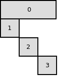

Introduction¶
BlockJuMP.jl is a package providing features to take advantage of the shape of block structured problem; in other words, problems on which Dantzig-Wolfe decomposition or Benders decomposition can be applied.
Note
- This package provides:
- a JuMP modeling layer for describing Benders decomposition
- a JuMP modeling layer for describing Dantzig-Wolfe decomposition
- an interface to write customized oracles for (Benders/Dantzig-Wolfe) subproblems
Only the first feature is supported by a solver for now (CPLEX 12.7)
Benders decomposition¶
Consider the following problem
The coefficients matrix has the following block structure :

Hence, we can apply Benders decomposition on this problem.
We partition the variables. Variables \(y_\alpha\), \(\alpha\in \{1 \ldots h\}\) are in the master. Variables \(x_{1,\alpha}\), \(\alpha \in \{1 \ldots i\}\) are in the first subproblem. Variables \(x_{2,\alpha}\), \(\alpha \in \{1 \ldots j\}\) are in the second subproblem. Variables \(x_{3,\alpha}\), \(\alpha \in \{1 \ldots k\}\) are in the third subproblem.
Assume that m is the compact formulation written with JuMP.
The user must create a function to describe this decomposition. Such function could be:
function b_decomp(var_name, var_id)
if var_name == :y
return (:B_MASTER, 0)
else
return (:B_SP, var_id[1])
end
end
add_Benders_decomposition(m, b_decomp)
Dantzig-Wolfe decomposition¶
Consider the following problem :
The coefficients matrix has the following block structure :
Hence, we can apply Dantzig-Wolfe decomposition on this problem.
We partition the constraints. Constraints \(\text{mc}_1\) to \(\text{mc}_m\) are in the master. Constraints \(\text{sc}_{1,1}\) to \(\text{sc}_{1,n}\) are in the first subproblem. Constraints \(\text{sc}_{2,1}\) to \(\text{sc}_{2,p}\) are in the second subproblem. Constraints \(\text{sc}_{3,1}\) to \(\text{sc}_{3,q}\) are in the third subproblem.
As for Benders decomposition, the user must to create function to describe this decomposition. Such function could be:
function dw_decomp(constr_name, constr_id)
if constr_name == :mc
return (:DW_MASTER, 0)
else
return (:DW_SP, constr_id[1])
end
end
add_Dantzig_Wolfe_decomposition(m, dw_decomp)